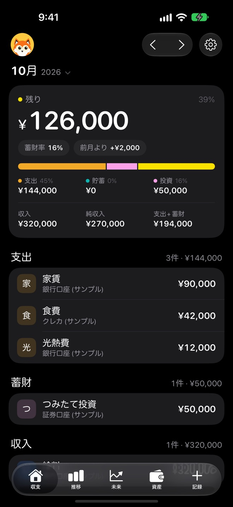
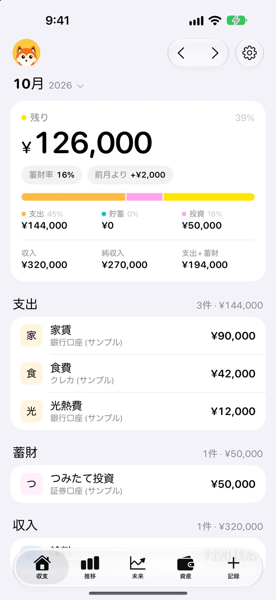
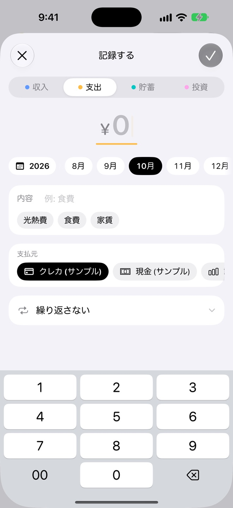
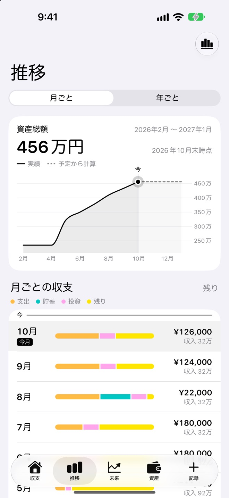
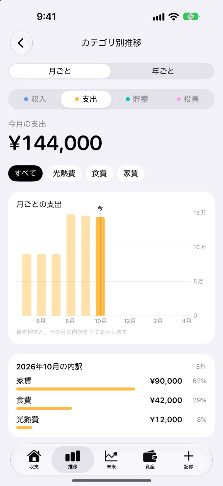
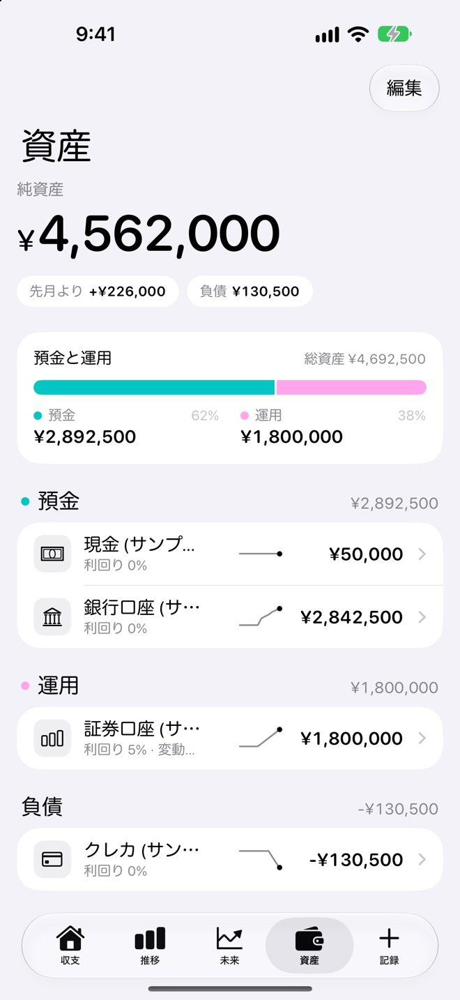
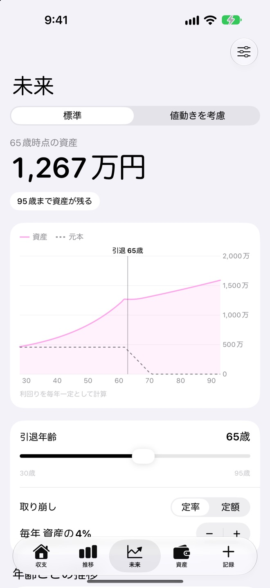
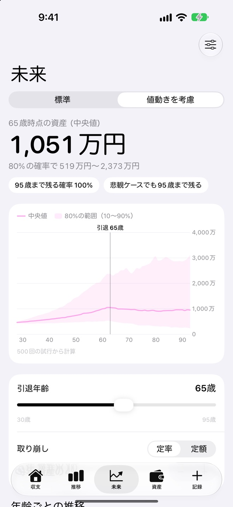
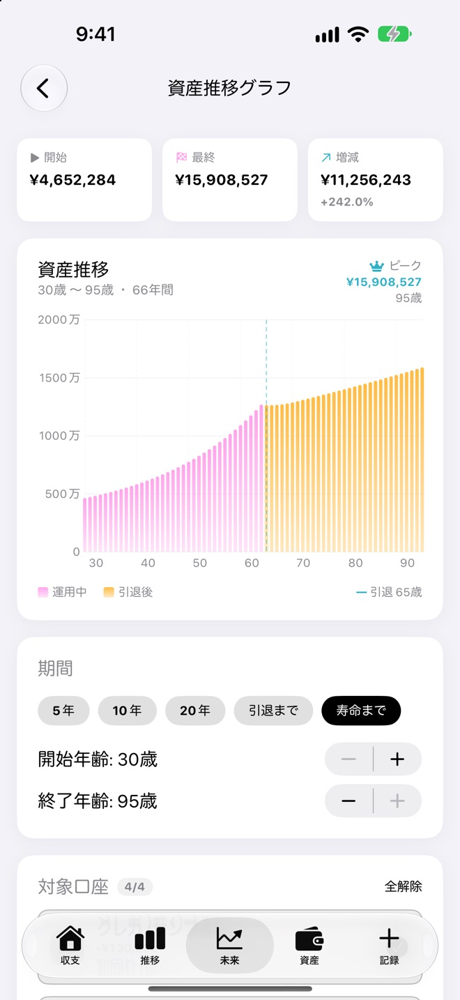

収入がどこへ行ったか、
1本のバーで
収支の画面では、今月の収入を支出・貯蓄・投資・残りの4色に分けて1本のバーで表します。蓄財率や前月との差も並ぶので、使いすぎた月にすぐ気づけます。
- 支出
- 貯蓄
- 投資
- 残り

「今月、あといくら使えるんだろう」「このまま積み立てて、老後は足りるのかな」。MoneyClear は、毎月の収支を記録するだけで、今月の残りから65歳時点の資産まで見えてくる家計簿です。
App Store で見るiPhone・iPad（iOS 18 以上）／アカウント登録は不要です

収入から支出・貯蓄・投資を引いた「残り」を、いちばん大きく表示。収入の行き先は1本のバーでわかります。
口座ごとの利回りと毎月の積立から、引退後まで資産がどう動くかを計算します。
種類を選んで金額を打つだけ。家賃や給料は繰り返しにしておけば、先の月にも予定として入ります。
家計簿と資産のシミュレーションが、同じデータでつながっています。記録した口座の残高と利回りから、この先を計算します。
収支の画面では、今月の収入を支出・貯蓄・投資・残りの4色に分けて1本のバーで表します。蓄財率や前月との差も並ぶので、使いすぎた月にすぐ気づけます。

収入・支出・貯蓄・投資を選んで、金額を打つだけ。前に使った内容はボタンで選べて、支払いに使った口座もタップで切り替えられます。

推移の画面では、資産総額の動きを、これまでの実績と、記録した予定から計算したこの先を1本のグラフで表示します。月ごとの収支も4色のバーで並ぶので、残りが少なかった月がすぐに見つかります。

家賃・食費・光熱費など、内容ごとの金額を月ごと・年ごとの棒グラフで見られます。棒を押すと、その月の内訳と割合が下に並びます。推移の画面を年ごとに切り替えると、長い期間の収支も確かめられます。

現金・銀行口座・証券口座・クレジットカードなどを口座ごとに管理し、預金・運用・負債と純資産を一覧で確かめられます。口座ごとに利回りを決めておくと、資産予測に使われます。

未来の画面では、口座の利回りと毎月の積立から、引退後までの資産の動きを計算します。結果は前提から計算した目安です。
引退年齢をスライダーで動かし、引退後の取り崩しを「資産の何%（定率）」か「毎月いくら（定額）」から選ぶと、グラフと65歳時点の資産がすぐに変わります。何歳まで資産が残るかも表示します。

「値動きを考慮」に切り替えると、口座ごとの値動きの大きさをもとに 500 回の試行を行い、資産の中央値と、80% の確率で収まる範囲を示します。何歳まで資産が残る確率と、悲観的なケースの結果もわかります。

資産推移グラフでは、5年・10年・20年・引退まで・寿命までと期間を選び、運用中と引退後の資産を色分けして表示します。対象にする口座を選んで、気になる口座だけで将来を確かめることもできます。

はじめて開いたときに、サンプルの口座と過去6か月分の記録を入れて各画面を試せます。サンプルは、あとで設定からまとめて消せます。
ダークモードに切り替えられ、ボタンの色も選べます。左上のアプリのアイコンの表示も設定できます。
記録をファイルに書き出して保管し、あとからそのファイルで復元できます。機種変更の前の控えにも。
記録した収支や口座の情報は、端末の中と、同期プランで同期する場合はあなた自身の iCloud にだけ保存されます。開発者のサーバーへ送ることはなく、銀行や証券会社につないで残高を取りに行くこともありません。アカウント登録は不要で、解析や広告の仕組みも入っていません。
毎月の記録と今月の残りは、無料で使えます。将来の資産を見たくなったらプレミアム、ほかの端末でも使うなら同期プランを。どちらも買い切りです。
お支払いなしで使える範囲
買い切り（1回のお支払い）
買い切り（1回のお支払い）
購入したプランは、同じ Apple アカウントのほかの端末でも「購入の復元」で使えます。同期には端末の iCloud へのサインインが必要です。